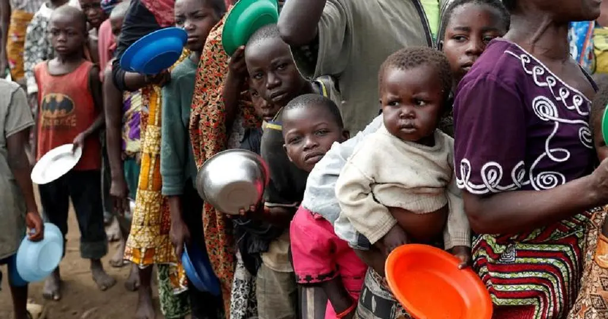

The Crisis of Hunger in Africa
Hunger in Africa remains one of the most pressing issues affecting millions of people. Despite progress in various sectors, many regions still struggle with food insecurity. This crisis is exacerbated by factors such as poverty, climate change, and political instability.
Efforts to address hunger in Africa require a multi-faceted approach, including increasing agricultural productivity, improving access to food, and supporting sustainable development practices.